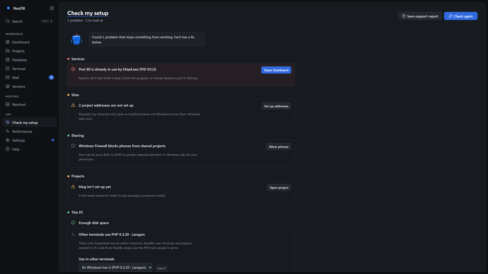
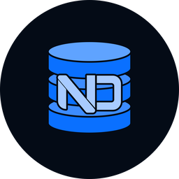

5 things only
NexDB does
Not XAMPPNot LaragonNot Herd
1ONLY IN NEXDB
Nex fixes your setup
One click fixes it.

2ONLY IN NEXDB
Problems, in plain words
Each with a Fix button.

3ONLY IN NEXDB
See every connection
Visitor to database, live.
4ONLY IN NEXDB
Deploy from your own PC
Update site, Migrate, Seed.

5ONLY IN NEXDB
Practice mode tours
Nothing on your PC changes.

PRACTICE MODE
Flip the switch to try it.
NextSkip

Try it free
14-day trial. Plans from ₱299.
db.nexiodev.site
NEXIO DEVS